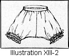
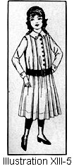

1917—American Dressmaking Step by Step
by Mme. Lydia Trattles Coates
Chapter 13—Children's Garments
Lesson 288—Routine of Making Children's Clothes
Follow all the rules for cutting, fitting, and making ladies' garments, as children's garments are made on exactly the same principles and according to the same rules, altho the application is in a simpler manner.
Lesson 289—Routine of Making an Underwaist (Illustration XIII-1)
- Obtain the correct measurements. (Lesson 8.)
- Learn the pattern's measurements. (Lesson 11.)
- Figure the specifications for the fitting of the pattern. (Lesson 18.)
- Make any necessary alterations on the pattern. (Lesson 19.)
- Fold the goods economically. (Lesson 3.)
- Lay on the pattern correctly. (Lesson 34.)
- Mark all construction marks with tailors' tacks. (Lesson 34.)
- Mark all center lines. (Lesson 34.)
- Cut out. (Lesson 35.)
- Baste all seams. (Lesson 55.)
- French seam all seams. (Lesson 60.) Hem or face the closing, using whichever method the pattern allowance indicates. (Lessons 85 and 95.) Face arm-scye with the exceptional arm-scye facing. (Lesson 98.)
- If embroidery edging is to be used, turn the top edge of the underwaist over to the right side of the waist and baste on the embroidery trimming. Cover the place where the trimming is set on with beading, insertion, or trimming braid. If a narrow lace edging is desired, face the edges of the waist and whip on the edging according to Lesson 230 or 231.
- Finish the lower edge with a band (Lesson 99 or 100), or facing (Lesson 95 or 96), or attach to another garment.
- Make buttonholes and sew on buttons. (Lessons 207 and 214.)
Lesson 290—Routine of Making Children's Drawers (Illustration XIII-2)
Children's drawers are made by following the same routine as outlined for the making of ladies' drawers. (Lesson 311.)
The center seams are finished with a Fell Seam. (Lesson 58.)
Buttonholes are usually worked in the band so that the drawers can be buttoned onto the waist. (Lesson 207.)
Lesson 291—Routine of Making a Girl's or Child's Petticoat (Illustration XIII-3)
- If the petticoat is to be joined to an underwaist, make the underwaist in accordance with instructions found in Lesson 289.
- Obtain the necessary measurements for the petticoat. (Lessons 8 and 11.)
- Figure the specifications for alterations. (Lesson 18.)
- Make any necessary alterations on the pattern. (Lesson 19.)
- Fold the goods economically. (Lesson 3.)
- Lay on the pattern according to the grain and fold marks. (Lesson 34.)
- Put in tailors' tacks to mark all perforations. (Lesson 34.)
- Run a colored thread to mark center line. (Lesson 34.)
- Cut out. (Lesson 35.)
- Baste all seams. (Lesson 55.)
- Baste in any tucks (Lesson 113) or insertion (Lesson 227, 228, or 229) desired.
- If the skirt has ruffles, they are basted on. (Lesson 124.)
- Gather the skirt at the top and join to the waist with a plain seam covered with a facing (Lesson 135) or baste into a band (Lesson 139).
- Try on and make any necessary alteration. (Lesson 187.)
- Stitch seams.
- Stitch tucks, if any, and finish any insertion which may have been used.
- Finish the closing with a hem or facing and make the placket. (Lesson 192, 195, or 196.)
- Finish bottom of the ruffles or flounces. (Lesson 85.)
- Finish bottom of the petticoat. (Lesson 85.)
Lesson 292—Routine of Making a Girl's or Child's Underslip (Illustration XIII-4)
- Obtain the measurement of the girl or child. (Lesson 8.)
- Obtain the measurements of the pattern. (Lessons 11 and 17.)
- Figure the specifications and make any necessary alterations on the pattern. (Lesson 18.)
- Fold the material economically. (Lesson 3.)
- Lay on the pattern correctly. (Lesson 34.)
- Mark all construction marks with tailors' tacks. (Lesson 34.)
- Mark all center lines. (Lesson 34.)
- Cut out the slip. (Lesson 35.)
- Baste the seams. (Lesson 55.) Use French seams. (Lesson 60.)
- Try on and make any necessary alterations. (Lessons 145 and 187.)
- Finish the seams. (Lesson 60, 58, or 75.)
- Make the placket closing. (Lesson 192, 195, or 196.)
- Finish the top of the slip with a narrow facing (Lesson 96) and either apply the trimming between the facing and the garment or whip on lace edging. (Lesson 230 or 231.)
- Finish the arm-scye with the Exceptional Facing. (Lesson 98.)
- Hem or face the bottom of the slip. (Lesson 85 or 95.)
- Put on any ruffles which may be used. (Lesson 124.)
- Make the buttonholes (Lesson 207) and sew on the buttons (Lesson 214).
Lesson 293—Routine of Making a Girl's or Child's Dress (Illustrations XIII-5 and 6)
- Have the body measurements taken correctly. In measuring for a girl's dress one takes only the measurements actually required. (Lesson 8.)
- Obtain the pattern measurements. (Lessons 11 to 17.)
- Figure the specifications for any necessary alteration of the pattern. (Lesson 18.)
- Make any necessary alterations on the pattern. (Lesson 19.)
- Fold the goods correctly and economically for cutting. (Lesson 3.)
- Lay out the pattern on the material according to the grain and fold marks of the pattern. (Lesson 34.)
- Mark all perforations and construction marks with tailors' tacks. (Lesson 34.)
- Mark all center lines. (Lesson 34.)
- Cut out the body portion of the dress. Unless it is a kimono or raglan sleeve, do not cut out the sleeves or collar until the body portion has been fitted and all alterations made and the seams finished.
- Baste in any tucks or plaits. (Lesson 113.)
- If the dress has a yoke, baste on the yoke. (Lesson 163 or 164.)
- Baste all seams. (Lesson 55.)
- If the dress has a vest, baste in the vest. (Lesson 161 or 162.)
- If the waist portion is joined to the skirt with a belt at the waistline, baste together. (Lesson 160.)
- Try on and make any necessary alterations. (Lessons 145 and 187.)
- Finish all seams.
- Stitch any plaits or tucks. (Lesson 113.)
- Finish the vest, if the dress has one. (Lesson 161 or 162.)
- Finish the yoke, if a yoke is used. (Lesson 163 or 164.)
- Hem or face the closing of the waist, whichever the pattern allowance indicates. (Lesson 85 or 95.)
- Make the placket closing of the skirt. (Lesson 192 or 196.)
- Hem or face the bottom of the skirt. (Lesson 85, 89, or 95.)
- Obtain the arm measurements. (Lesson 8.)
- Obtain the sleeve measurements. (Lesson 14.)
- Figure the specifications to learn if any alterations are required. (Lesson 18.)
- Alter the sleeve pattern, should it be necessary. (Lesson 24.)
- Cut out the sleeves. (Lesson 35.)
- Baste together the seams of the sleeve. (Lesson 55.)
- Prepare the sleeves for hanging. (Lesson 172.)
- Put in the sleeves following instructions of Lesson 174.
- Finish the tops of sleeves. (Lesson 177.)
- Put on the cuff, if a cuff is used. (Lesson 180 or 181.)
- Finish the bottom of sleeves. (Lesson 179.)
- Obtain the neck measurements. (Lesson 8.)
- Obtain the collar measurements. (Lesson 15.)
- Figure specifications for fitting the collar pattern. (Lesson 18.)
- Alter the pattern if necessary. (Lesson 29.)
- Put on the collar. (Lesson 165 or 166.) If attached to a rever or vest, apply according to Lesson 170. If a middy collar, apply according to instructions given in Lesson 167.
- Apply any desired trimming.
- Make buttonholes (Lesson 207) and sew on the buttons (Lesson 214), or finish with hooks and eyes (Lesson 215), or snap fasteners, or hooks and blind loops (Lesson 217).
Lesson 294—Routine of Making a Middy (Illustration XIII-7)
Follow all instructions as given for the waist portion of Lesson 293. The fronts may have eyelets worked and then be laced together. An overfacing may be put on for a band at the lower edge.
Lesson 295—Routine of Making Children's Rompers (Illustration XIII-8)
- Prepare materials. (Lesson 4.)
- Take the child's measurements. (Lesson 8.)
- Learn the pattern's measurements. (Lessons 11 to 17.)
- Figure the specifications for fitting, if any. (Lesson 18.)
- Make all necessary alterations on the pattern. (Lesson 19.)
- Fold the materials economically and correctly. (Lesson 3.)
- Lay on the pattern. (Lesson 34.)
- Put in all construction marks. (Lesson 34.)
- Cut out the garment. (Lesson 35.)
- Baste the rompers together. Baste all seams into an inside welt seam. (Lesson 75.) Welt seams are usually made on the right side of the garment, but in children's rompers the welt is made on the underside of the garment.
- Try on and make any necessary alterations.
- Stitch all seams.
- Finish the closing. (Lesson 192, 194, or 196.)
- Cut, fit, and put on collar. (Lesson 165 or 166.)
- Cut, fit, make, and put in sleeves. (Lessons 172 and 174.)
- Cut out, make, and put on cuffs. (Lesson 180 or 181.)
- Hem the bottom of the rompers. (Lesson 85.)
- Put on pockets, if pockets are used. (Lesson 203.)
- Make buttonholes and sew on buttons. (Lessons 207 and 214.)
Lesson 296—Routine of Making a Child's Nightgown (Illustration XIII-9)
Follow all instructions given in Lesson 315, which teaches each step of nightgown making.